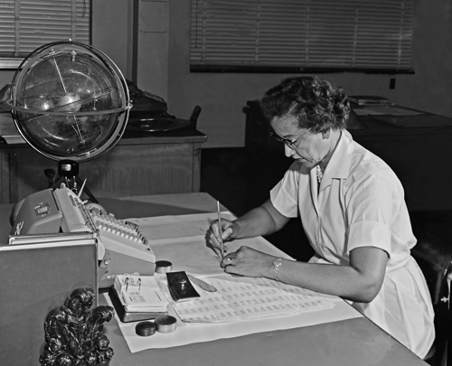

Katherine Johnson is an
African-American mathematician whose calculations of orbital mechanics as a NASA employee
were critical to the success of the first and subsequent U.S. manned spaceflights.
Johnson's work included calculating trajectories, launch windows and emergency return paths for
Project Mercury spaceflights, including those of astronauts Alan Shepard, the first American in space,
and John Glenn, the first American in orbit, and rendezvous paths for the Apollo lunar lander and
command module on flights to the Moon.
Katherine Johnson page on Wikipedia
"Shooting for the moon"
A tribute to Katherine Johnson
The woman who sent humanity to the moon

Katherine G. Johnson at her desk at NASA in 1966
Facts
- Katherine Johnson was born in 1918 in West Virginia. She was the youngest of four children.
She showed strong mathematical abilities from an early age.
Because their County did not offer public schooling for African-American students past the eighth grade, the Colemans arranged for their children to attend high school in Institute, West Virginia.
Johnson was enrolled when she was only 10 years old. - Johnson graduated from high school at 14 and entered West Virginia State.
As a student, she took every math course offered by the college, and graduated summa cum laude in 1937, at age 18, with degrees in mathematics and French.
She took on a teaching job at a black public school in Marion, Virginia. - In 1953, she became part of the early NASA team.
- From 1958 until her retirement in 1986, Johnson worked as an aerospace technologist, moving during her career to the Spacecraft Controls Branch.
- In 1961, she calculated the trajectory for the space flight of Alan Shepard, the first American in space.
She also calculated the launch window for his 1961 Mercury mission.
She plotted backup navigation charts for astronauts in case of electronic failures.
Also in 1961, her work helped to ensure that Alan Shepard's Freedom 7 Mercury capsule would be quickly found after landing, using the accurate trajectory that had been established. - In 1969, she helped to calculate the trajectory for the Apollo 11 flight to the Moon.
- In 1970, Johnson worked on the Apollo 13 moon mission. When the mission was aborted, her work on backup procedures and charts helped set a safe path for the crew's return to Earth, creating a one-star observation system that would allow astronauts to determine their location with accuracy.
- Later in her career, Johnson worked on the Space Shuttle program, the Earth Resources Satellite, and on plans for a mission to Mars.
- In 2015, President Barack Obama presented Johnson with the Presidential Medal of Freedom.
Book
"Hidden Figures: The American Dream and the Untold Story of the Black Women Who Helped Win the Space Race"
is a 2016 non-fiction book written by Margot Lee Shetterly.
Hidden Figures tells the story of three African-American women who worked as computers to
solve problems for engineers and others at NASA. For the first years of their careers,
the workplace was segregated and women were kept in the background as human computers.
The book explains how these three historical women overcame discrimination and racial segregation
to become three American achievers in mathematics, scientific and engineering history.
The main character, Katherine Johnson, calculated rocket trajectories for the Mercury and Apollo missions.
The book "Hidden figures" page on Wikipedia
Movie

"Hidden Figures" is a 2016 American biographical drama film loosely based on the non-fiction book
of the same name by Margot Lee Shetterly about black female mathematicians who worked at the National Aeronautics and
Space Administration (NASA) during the Space Race.
The film stars Taraji P. Henson as Katherine Johnson, a mathematician who calculated flight trajectories for Project Mercury
and other missions. The film also features Octavia Spencer as NASA supervisor and mathematician Dorothy Vaughan and
Janelle Monáe as NASA engineer Mary Jackson.
The film received positive reviews from critics. It was chosen by National Board of Review as one of the top ten films
of 2016 and was nominated for numerous awards, including three Oscar nominations (Best Picture, Best Adapted Screenplay and
Best Supporting Actress for Spencer), and two Golden Globes (Best Supporting Actress for Spencer and Best Original Score).
The movie "Hidden figures" page on Wikipedia
"Hidden figures" official trailer
Documentary
"MAKERS is a media brand that exists to accelerate the women's movement through stories of real-life experiences that ignite passion and action."
They created this video in which we can listen to Katherine Johnson talk about her career and achievements.
More
Books for children
Barbie doll by Mattel
"The Barbie® Inspiring Women™ Katherine G. Johnson doll celebrates the achievements of a pioneer who broke through barriers of race and gender. Like the trajectories she calculated, Katherine's contributions inspire young people to excel in math and science, and to reach for the stars." See more here